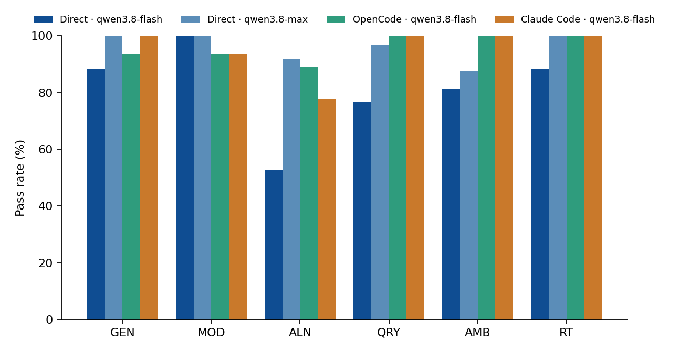
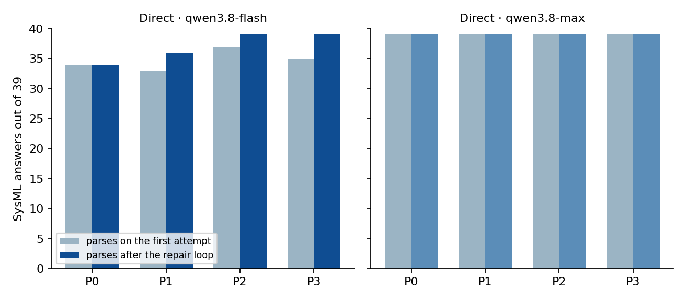

Maritime SysML exam
27 sealed tasks, four candidates, scored only by the official SysML v2 Pilot and answer keys written in advance
RTRC 2706 · UConn Senior Design · synthetic maritime ISR scenario; no number is an RTX specification. Built from saved files by python3 analysis/report/build_exam_report.py.
What can be said
| Question | Saved result |
|---|
| How much do the candidates get right without the answer key? | Direct qwen3.8-flash 270/324 (83.3%); direct qwen3.8-max 313/324 (96.6%); OpenCode on flash 78/81; Claude Code on flash 78/81. The weakest task type for flash is ALN: 19/36 (max 33/36). |
| With the same model, do repair, an outline or retrieval help? | Flash, 81 cells each: P0 65, P1 68, P2 67, P3 70. The repair loop lifts the official parse from the first attempt to the final one (39 SysML answers each): P1 33 → 36, P2 37 → 39, P3 35 → 39. Max parses 39/39 on the first attempt in every approach. |
| Can a model replace the tool as judge? | Not used. Two model judges were tried on the 2026-10-03 answers and agreed with the tool on 226/288 and 157/288; scores come only from the Pilot and the keys (decision 025). |
| Are the agent scores clean? | The scored agent runs ran in a sandbox that shows only the task input, the rules file and ./validate. Two earlier agent batches of the same morning are discarded: OpenCode could read the answer keys, Claude Code had its tools denied. The agents' ALN rows come from a rerun: the first sandboxed batch checked alignment packages with ./validate in a file order the official Pilot passes and the scorer's order fails (section 7). |
| What did this cost? | At the China (Beijing) list price the scored batches and the side benchmarks cost $2.4481; flash P0 $0.0087, flash P3 $0.0254, max P0 $0.1199. Everything recorded, including the discarded runs, about $3.9294. |
1. What was measured
27 tasks: generate a model (GEN 5), modify a model (MOD 5), align two models (ALN 3, paper 1), query a model (QRY 5), ask when a number is missing (AMB 4), restate a model as requirements (RT 5). A second reviewer checked every key (bench/tasks/t4_maritime_isr/heldout/REVIEW.md, 27/27 mechanical checks) and the bank, scorers, prompts, retrieval library and toolchain are frozen in bench/FREEZE.md (tag freeze-2026-10-06-r2). Revision 2, made after the batches by the user's decisions (decision 028), puts documentation text into the retrieval cards (every direct P3 cell rerun), fixes the MOD-01 and AMB-02 keys and counts an AMB number as invented only when the answer also writes SysML; the saved answers were re-scored with the batches' own scoring code and six cells changed from FAIL to PASS (analysis/rescore-r2.json).
A task passes when the official parse passes (GEN, MOD, ALN), every required name, connection or mapping is present, no number was invented, every value the task said to keep is unchanged, and every engineering check comes out as the key expects. Whether the design meets its budget is a separate design verdict (decision 019).
Direct candidates answer through one conversation per cell. P0 writes once. P1 adds the repair loop: the complete official error list goes back after every earlier version, up to 20 repairs, stopping after three identical resubmissions. P2 writes an outline first; P3 also retrieves official example models and notes with MiniLM + FAISS (paper 2); P2 and P3 repair as P1. The agents get the task input, AGENTS.md and ./validate in a bubblewrap sandbox and repair inside their own session; the grader parses only their final answer. The direct prompts carry the SysML rules (and the alignment rules for ALN); the agents do not get them and learn the Pilot's rules only from its diagnostics.
2. Four candidates by task type
| Type | Direct · qwen3.8-flash | Direct · qwen3.8-max | OpenCode · qwen3.8-flash | Claude Code · qwen3.8-flash |
|---|
| GEN | 53/60 | 60/60 | 14/15 | 15/15 |
| MOD | 60/60 | 60/60 | 14/15 | 14/15 |
| ALN | 19/36 | 33/36 | 8/9 | 7/9 |
| QRY | 46/60 | 58/60 | 15/15 | 15/15 |
| AMB | 39/48 | 42/48 | 12/12 | 12/12 |
| RT | 53/60 | 60/60 | 15/15 | 15/15 |
| All | 270/324 | 313/324 | 78/81 | 78/81 |

Figure 1. Pass rate by task type. Direct candidates: 60 cells per type (36 for ALN, 48 for AMB); agents: 15 runs per type (9 for ALN, 12 for AMB).
Repeat groups whose three repeats disagree: flash 23/108, max 8/108, OpenCode 3/27, Claude Code 2/27.
| Agent | Pass | Hit the 900 s limit | No answer.md | Runs that called ./validate | ./validate calls |
|---|
| OpenCode · qwen3.8-flash | 78/81 | 2 | 2 | 68 | 151 |
| Claude Code · qwen3.8-flash | 78/81 | 2 | 3 | 69 | 134 |
3. Approaches with the same model
| Approach | flash pass | flash parse 1st → final (of 39) | flash repairs | flash tokens | flash USD | max pass | max USD |
|---|
| P0 one-shot | 65/81 | 34 → 34 | 0 | 46,864 | $0.0087 | 77/81 | $0.1199 |
| P1 repair loop (≤20) | 68/81 | 33 → 36 | 17 | 79,551 | $0.0123 | 79/81 | $0.1188 |
| P2 outline first + repair | 67/81 | 37 → 39 | 2 | 128,529 | $0.0242 | 78/81 | $0.3372 |
| P3 retrieval + outline + repair | 70/81 | 35 → 39 | 4 | 139,996 | $0.0254 | 79/81 | $0.3616 |

Figure 2. SysML answers (GEN, MOD, ALN; 39 per approach) that pass the official parse on the first attempt and after the repair loop. P0 has no loop.
4. How the failures split
| Class | flash | max | OpenCode | Claude Code |
|---|
| aln-missing-pair | 14 | 3 | 0 | 0 |
| query-renamed | 14 | 2 | 0 | 0 |
| missed-topic | 9 | 6 | 0 | 0 |
| missing-phrase | 7 | 0 | 0 | 0 |
| syntax-connection | 6 | 0 | 0 | 0 |
| agent-timeout | 0 | 0 | 2 | 2 |
| checklist-missing | 2 | 0 | 0 | 0 |
| syntax-reference | 2 | 0 | 0 | 0 |
| no-sysml | 0 | 0 | 1 | 1 |
Each failing cell gets one class from its saved evidence (bench/classify_failures.py, analysis/failure-classes-20261006.jsonl); docs/failure_taxonomy.md explains the classes with examples.
5. Per task
| Task | flash | max | OpenCode | Claude Code |
|---|
| GEN-01 | 10/12 | 12/12 | 3/3 | 3/3 |
| GEN-02 | 12/12 | 12/12 | 3/3 | 3/3 |
| GEN-03 | 10/12 | 12/12 | 3/3 | 3/3 |
| GEN-04 | 12/12 | 12/12 | 3/3 | 3/3 |
| GEN-05 | 9/12 | 12/12 | 2/3 | 3/3 |
| MOD-01 | 12/12 | 12/12 | 3/3 | 3/3 |
| MOD-02 | 12/12 | 12/12 | 2/3 | 3/3 |
| MOD-03 | 12/12 | 12/12 | 3/3 | 2/3 |
| MOD-04 | 12/12 | 12/12 | 3/3 | 3/3 |
| MOD-05 | 12/12 | 12/12 | 3/3 | 3/3 |
| ALN-01 | 5/12 | 12/12 | 3/3 | 3/3 |
| ALN-02 | 2/12 | 9/12 | 2/3 | 1/3 |
| ALN-03 | 12/12 | 12/12 | 3/3 | 3/3 |
| QRY-01 | 4/12 | 10/12 | 3/3 | 3/3 |
| QRY-02 | 9/12 | 12/12 | 3/3 | 3/3 |
| QRY-03 | 12/12 | 12/12 | 3/3 | 3/3 |
| QRY-04 | 9/12 | 12/12 | 3/3 | 3/3 |
| QRY-05 | 12/12 | 12/12 | 3/3 | 3/3 |
| AMB-01 | 6/12 | 12/12 | 3/3 | 3/3 |
| AMB-02 | 9/12 | 6/12 | 3/3 | 3/3 |
| AMB-03 | 12/12 | 12/12 | 3/3 | 3/3 |
| AMB-04 | 12/12 | 12/12 | 3/3 | 3/3 |
| RT-01 | 12/12 | 12/12 | 3/3 | 3/3 |
| RT-02 | 12/12 | 12/12 | 3/3 | 3/3 |
| RT-03 | 12/12 | 12/12 | 3/3 | 3/3 |
| RT-04 | 11/12 | 12/12 | 3/3 | 3/3 |
| RT-05 | 6/12 | 12/12 | 3/3 | 3/3 |
6. Side benchmarks named in the brief
| Candidate | SysEngBench | PURE |
|---|
| Direct · qwen3.8-flash | 283/300 | 6/6 |
| Direct · qwen3.8-max | 291/300 | 6/6 |
| OpenCode · qwen3.8-flash | 272/300 | 6/6 |
| Claude Code · qwen3.8-flash | 291/300 | 6/6 |
SysEngBench (rabell/SysEngBench, MIT): 100 questions fixed with seed 20261006, 10 per prompt, 3 repeats; always answering B scores 51/100 on this subset. PURE (Zenodo 7118517, CC BY 4.0): two excerpts, three repeats, extracted sentences must equal the key. Neither is added to the exam score.
7. Runs that do not count
| Batch | Score | Why it does not count | Folder |
|---|
| OpenCode, workspace inside the repository | 77/81 | The agent could read the whole repository and read answer keys in several runs, including the key of the task it was solving (GEN-01, GEN-02, GEN-05). Not a clean score. | analysis/opencode-qwen3.8-flash-20261006T070152 |
| Claude Code, tools denied | 60/81 | Every Bash and Write call was denied (43 and 10), so the agent never ran the validator; not the same setup as OpenCode. | analysis/claude-qwen3.8-flash-20261006T070153 |
| OpenCode, ALN runs of the first sandboxed batch | 6/9 | ./validate passed the files in the order the agent gave them, and the Pilot's verdict depends on that order: with the agent's own file first, 8 alignment packages (OpenCode 3, Claude Code 5) that fail in the scorer's order (sources first) passed the agent's check and were submitted. Every ALN run of both agents was rerun with ./validate in the scorer's order (decision 026); the rerun replaces these rows. | analysis/opencode-jail-qwen3.8-flash-20261006T133737 (replaced by analysis/opencode-jail-aln-qwen3.8-flash-20261006T152723) |
| Claude Code, ALN runs of the first sandboxed batch | 1/9 | ./validate passed the files in the order the agent gave them, and the Pilot's verdict depends on that order: with the agent's own file first, 8 alignment packages (OpenCode 3, Claude Code 5) that fail in the scorer's order (sources first) passed the agent's check and were submitted. Every ALN run of both agents was rerun with ./validate in the scorer's order (decision 026); the rerun replaces these rows. | analysis/claude-jail-qwen3.8-flash-20261006T133739 (replaced by analysis/claude-jail-aln-qwen3.8-flash-20261006T152725) |
| flash, P3 cells retrieved with cards that lacked documentation text | 69/81 | The paper 2 replication (decision 027) showed that the authors' node text carries each element's documentation and our retrieval cards did not. The cards now do, and every P3 cell of both direct batches was rerun under freeze revision 2 (decision 028); the rerun replaces these rows. | analysis/heldout-qwen3.8-flash-20261006T070150 (replaced by analysis/heldout-p3doc-qwen3.8-flash-20261006T171547) |
| max, P3 cells retrieved with cards that lacked documentation text | 79/81 | The paper 2 replication (decision 027) showed that the authors' node text carries each element's documentation and our retrieval cards did not. The cards now do, and every P3 cell of both direct batches was rerun under freeze revision 2 (decision 028); the rerun replaces these rows. | analysis/heldout-qwen3.8-max-20261006T070151 (replaced by analysis/heldout-p3doc-qwen3.8-max-20261006T171549) |
| 2026-10-03 matrix (24 tasks, old repair loop, old AMB/RT rules) | 224/288 | qwen3.8-flash, P1 repair with 3 rounds and only the latest error lines, re-scored once on 2026-10-03; kept as the record of the old rules, not comparable cell for cell. | analysis/heldout-20261003T* |
Validator order. The official Pilot 0.62 can give a different verdict for the same files in a different order: an alignment package that writes a nested usage as Pkg::part::sub fails with Must be an accessible feature (use dot notation for nesting) when the source models come first, as in the scorer, and passes when the package comes first. Re-validating every graded ALN answer with the package first changed (bench/check_validator_order.py): direct flash 0 of 36; direct max 0 of 36; OpenCode 0 of 9; Claude Code 0 of 7; OpenCode first batch (superseded) 3 of 9; Claude Code first batch (superseded) 5 of 6; gold packages 0 of 3. ./validate now passes the files in the scorer's order (decision 026).
8. What it cost
Prices checked 2026-10-03, China (Beijing): qwen3.8-flash input $0.113, cached $0.014, output $0.382 per million tokens; qwen3.8-max input $1.65, cached $0.206, output $4.951 per million tokens. 4 Part 2 runs recorded only requirements, designs and trade-offs, not alignment and read-back; later runs record everything. 5 MOD change runs predate usage logging; later runs record everything. 5 Claude Code runs hit the 900 s limit before Claude Code reported its usage (it reports only when a run ends); their tokens are not in these sums, so Claude Code's cost is a lower bound. The paper 1 replication (4 calls, qwen3.8-max) and the trial runs of 2026-10-06 are recorded in their own folders and not summed here.
| Group | Item | Model | Input tokens | Of which cached | Output tokens | USD |
|---|
| Direct calls (81 cells per approach) | P0 · qwen3.8-flash | qwen3.8-flash | 34,080 | 0 | 12,784 | $0.0087 |
| Direct calls (81 cells per approach) | P1 · qwen3.8-flash | qwen3.8-flash | 63,112 | 11,008 | 16,439 | $0.0123 |
| Direct calls (81 cells per approach) | P2 · qwen3.8-flash | qwen3.8-flash | 92,026 | 1,024 | 36,503 | $0.0242 |
| Direct calls (81 cells per approach) | P3 · qwen3.8-flash | qwen3.8-flash | 103,573 | 2,048 | 36,423 | $0.0254 |
| Direct calls (81 cells per approach) | P0 · qwen3.8-max | qwen3.8-max | 34,080 | 0 | 12,859 | $0.1199 |
| Direct calls (81 cells per approach) | P1 · qwen3.8-max | qwen3.8-max | 34,080 | 0 | 12,647 | $0.1188 |
| Direct calls (81 cells per approach) | P2 · qwen3.8-max | qwen3.8-max | 89,577 | 0 | 38,259 | $0.3372 |
| Direct calls (81 cells per approach) | P3 · qwen3.8-max | qwen3.8-max | 100,459 | 0 | 39,551 | $0.3616 |
| Agents in the sandbox (81 runs each) | OpenCode (81 runs) | qwen3.8-flash | 23,274,893 | 21,470,720 | 463,909 | $0.6817 |
| Agents in the sandbox (81 runs each) | Claude Code (81 runs) | qwen3.8-flash | 17,398,757 | 16,263,680 | 414,434 | $0.5143 |
| Side benchmarks | SysEngBench · flash | qwen3.8-flash | 24,075 | 2,048 | 2,962 | $0.0036 |
| Side benchmarks | SysEngBench · max | qwen3.8-max | 24,075 | 2,048 | 2,136 | $0.0473 |
| Side benchmarks | SysEngBench · OpenCode | qwen3.8-flash | 837,868 | 729,088 | 46,530 | $0.0403 |
| Side benchmarks | SysEngBench · Claude Code | qwen3.8-flash | 2,957,612 | 2,735,104 | 119,331 | $0.1090 |
| Side benchmarks | PURE · flash | qwen3.8-flash | 1,254 | 0 | 231 | $0.0002 |
| Side benchmarks | PURE · max | qwen3.8-max | 1,254 | 0 | 222 | $0.0032 |
| Side benchmarks | PURE · OpenCode | qwen3.8-flash | 637,272 | 577,536 | 21,106 | $0.0229 |
| Side benchmarks | PURE · Claude Code | qwen3.8-flash | 664,065 | 620,032 | 9,601 | $0.0173 |
| Other experiments | Graph retrieval, query tasks (5) | qwen3.8-max | 1,008 | 0 | 145 | $0.0024 |
| Discarded runs (spent, not counted) | OpenCode, workspace inside the repository (81 runs) | qwen3.8-flash | 18,163,285 | 16,782,080 | 338,904 | $0.5205 |
| Discarded runs (spent, not counted) | Claude Code, tools denied (81 runs) | qwen3.8-flash | 334,549 | 4,277,760 | 208,957 | $0.1397 |
| Discarded runs (spent, not counted) | OpenCode, ALN runs of the first sandboxed batch (9) | qwen3.8-flash | 6,020,562 | 5,613,824 | 183,173 | $0.1945 |
| Discarded runs (spent, not counted) | Claude Code, ALN runs of the first sandboxed batch (9) | qwen3.8-flash | 2,618,044 | 2,478,848 | 145,471 | $0.1060 |
| Discarded runs (spent, not counted) | flash, P3 cells retrieved with cards that lacked documentation text (81) | qwen3.8-flash | 150,117 | 30,720 | 47,404 | $0.0320 |
| Discarded runs (spent, not counted) | max, P3 cells retrieved with cards that lacked documentation text (81) | qwen3.8-max | 101,742 | 0 | 40,782 | $0.3698 |
| Part 2 prototype | One run (average of 4 fully recorded) | qwen3.8-max | 3,996 | 0 | 1,846 | $0.0157 |
| MOD change chain | One run | qwen3.8-max | 727 | 0 | 441 | $0.0034 |
9. What these results cannot support
| Claim | Why not |
|---|
| The models are ready to design maritime systems | 27 synthetic tasks with one author and one reviewer; a Pilot PASS is syntax, and the budgets are static sums. |
| One approach is reliably better than another | Three repeats per cell and repeat groups that disagree; no confidence intervals were computed. |
| The agents beat the direct calls in general, or the reverse | One model (flash), one pinned version of each agent, one sandbox setup, and different help: the direct prompts carry the SysML rules, the agents have the validator in a loop they run themselves. Agents spend many more tokens per answer. |
| Alignment pairs are semantically right whenever the Pilot passes | The Pilot checks that names resolve; the ALN keys and the person in 2.3 decide meaning. |
| Results transfer to other model families | Only Qwen models were run. |
10. Files
Scored batches: analysis/heldout-qwen3.8-flash-20261006T070150/results.jsonl, analysis/heldout-qwen3.8-max-20261006T070151/results.jsonl, analysis/opencode-jail-qwen3.8-flash-20261006T133737/results.jsonl, analysis/claude-jail-qwen3.8-flash-20261006T133739/results.jsonl; agents' ALN rows: analysis/heldout-p3doc-qwen3.8-flash-20261006T171547/results.jsonl, analysis/heldout-p3doc-qwen3.8-max-20261006T171549/results.jsonl, analysis/opencode-jail-aln-qwen3.8-flash-20261006T152723/results.jsonl, analysis/claude-jail-aln-qwen3.8-flash-20261006T152725/results.jsonl. Per-task table: per_task.csv. Status page: STATUS.md. Decisions 019 (task vs design verdict), 022 (repair loop), 023 (retrieval), 024 (alignment), 025 (no judges, second review, freeze), 026 (agent sandbox), 027 (paper 2 replicated on its own model).
This page only summarises results already on disk; it calls no model.